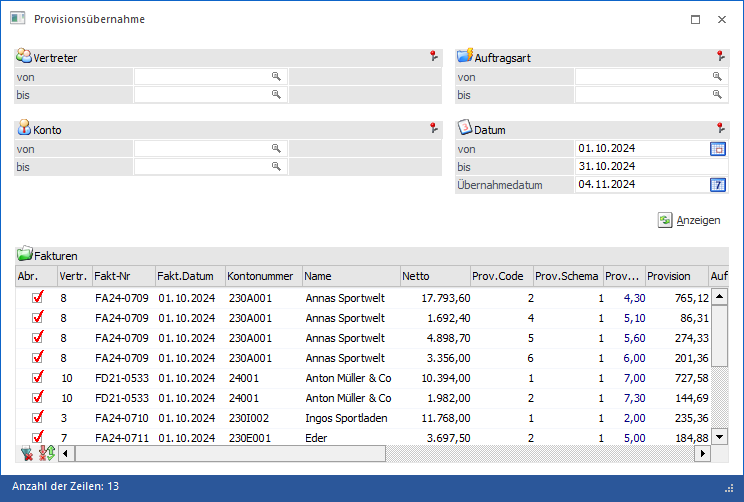
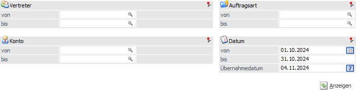
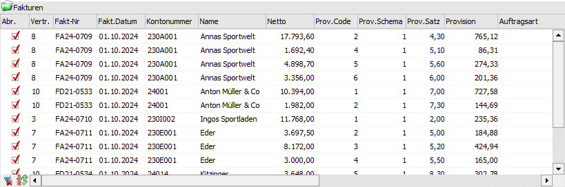
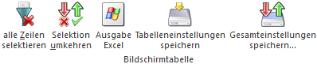

Umsatz bzw. Provisionsdaten für Vertreter können wie folgt erstellt werden:
ü bei der Fakturierung
ü manuell im Vertreter-Buchungsprogramm
In beiden Fällen werden Zeilen für eine Vertreter-Provisionsübernahme gebildet und können mit Hilfe des Menüpunkts…
1 WinLine FAKT
1 Auswertungen
1 Vertreterauswertungen
1 Provisionsübernahme
… übernommen werden.
Hinweis
Erst nach der Übernahme dieser Vertreterjournalzeilen in die Vertreterdaten können die Auszahlungen bzw. die KF-Buchungen für jene Zeilen erstellt werden.

Die Ausgabe kann durch folgende Kriterien eingeschränkt bzw. beeinflusst werden:
Selektion

Ø Vertreter von / bis
An dieser Stelle kann definiert werden, welche Vertreter bzw. Vertretergruppen für die Provisionsübernahme vorgeschlagen werden sollen.
Ø Konto von / bis
Hier kann eine Selektion auf die Konten erfolgen, dessen Fakturen übernommen werden sollen.
Ø Auftragsart von / bis
Bei der Erfassung eines Beleges kann im Belegkopf eine Auftragsart hinterlegt werden. Nach dieser kann an dieser Stelle selektiert werden.
Ø Datum von / bis
Mit dieser Einschränkung kann entschieden werden, von welchem Zeitraum die Fakturen übernommen werden sollen.
Ø Übernahmedatum
In diesem Feld muss das Datum der Provisionsübernahme festgelegt werden. Dieses steht in der weiteren Folge in vielen Vertreterauswertungen als Selektionsfeld zur Verfügung.
Anzeigen

Ø Anzeigen
Durch Anwahl des Buttons "Anzeigen" wird die Tabelle "Fakturen" gemäß der zuvor getroffenen Selektion gefüllt.
Tabellen "Fakturen"

In der Tabelle werden, nach Anwahl des Buttons "Anzeigen", alle Fakturen / Provisionszeilen gemäß der zuvor getroffenen Selektion angezeigt. Hierbei werden u.a. die Faktura-Nummer, die Kontonummer, der Nettobetrag und der Provisionsbetrag angezeigt. Editierbar ist nur die Spalte "Abr." (siehe Feld "Abr.") und ggfs. die Option "Übern. abgeschl." (siehe Feld "weitere Spalten").
Hinweis
Hinweis
Durch die Einstellung "Provisionsübernahme pro FIBU-Periode" in den FAKT-Parametern (WinLine START - Parameter - Applikations-Parameter - FAKT-Parameter - Vertreter - Allgemein) wird pro FIBU-Periode geprüft, ob es neue Zahlungen gibt und wie viel für diese FIBU-Periode bereits übernommen wurde. In diesem Fall wird pro FIBU-Periode eine zusätzliche Zeile in die Übernahmetabelle gestellt, aus der ersichtlich ist, für welche FIBU-Periode wie viel übernommen wird. Diese Zeilen können nicht getrennt von der "Hauptzeile" selektiert oder deselektiert werden.
Ø Abr.
Mit Hilfe dieser Checkbox wird angegeben, welche Vertreterjournalzeilen für die Abrechnung freigegeben werden sollen (d.h. für welche Fakturen soll eine Übernahme stattfinden).
Hinweis
In den FAKT-Parametern (WinLine START - Parameter - Applikations-Parameter - FAKT-Parameter - Vertreter - Allgemein) kann definiert werden, welche Fakturen standardmäßig zur Übernahme vorgeschlagen werden sollen (Checkbox aktiv). Es steht die folgenden Varianten zur Verfügung:
ü allen Fakturen
ü keine Fakturen
ü alle Fakturen die in der WinLine FIBU ausgeglichen sind
ü alle Fakturen die neue (Teil-)Zahlungen haben
Ø weitere Spalten
Ist in den FAKT-Parametern (WinLine START - Parameter - Applikations-Parameter - FAKT-Parameter - Vertreter - Allgemein) die Einstellung "alle Fakturen selektieren, die neue (Teil-)Zahlungen haben" aktiviert worden, so werden in der Tabelle vier zusätzliche Spalten angezeigt:
ü Zahlungsbetrag
ü Aliquote BMG
ü Aliquote Provision
ü Übernahme abgeschlossen
Mit Hilfe der Option "Übernahme abgeschlossen" kann eine Provisionszeile, welche noch nicht zur Gänze bezahlt ist, als erledigt markieren werden. Diese wird dann nicht mehr vorgeschlagen.
Tabellenbuttons

Ø alle Zeilen selektieren
Durch Anwahl dieses Buttons werden alle Vertreterjournalzeilen in der Tabelle ausgewählt.
Ø Selektion umkehren
Durch Anklicken des Buttons "Selektion umkehren" wird die Selektion in der Tabelle ins Gegenteil verkehrt.
Ø Ausgabe Excel
Durch Anwahl des Buttons "Ausgabe Excel" wird der Inhalt der Tabelle nach Microsoft Excel übergeben.
Ø Tabelleneinstellungen speichern
Die Spalten einer Tabelle können grundsätzlich an beliebige Positionen verschoben, bzw. in der Breite entsprechend angepasst werden. Durch Anwahl des Buttons "Tabelleneinstellungen speichern" werden die Einstellungen benutzerspezifisch gespeichert und bei dem nächsten Aufruf des Programmpunktes wieder vorgeschlagen.
Ø Gesamteinstellungen speichern
Im Gegensatz zu "Tabelleneinstellungen speichern" können mit "Gesamteinstellungen speichern" mehrere Tabellenaufbauten gespeichert und nach Wunsch geladen werden. Zusätzlich werden Sonderfunktionen der Tabelle (z.B. "Spalte gruppieren") ebenfalls bei der Speicherung bedacht.
Buttons
Ø Ok
Nach Drücken des Buttons "Ok" bzw. der Taste F5 werden die Vertreterjournalzeilen übernommen und stehen für eine Auszahlung bzw. eine KF-Buchungs-Erstellung zur Verfügung.
Ø Ende
Durch Anwahl des Buttons "Ende" bzw. der Taste ESC wird das Fenster geschlossen
Hinweis
Wenn am Rand einer Fakturenzeile zwei Sternchen ** stehen, dann bedeutet dieses, dass in dieser Zeile ein Fehler gefunden wurde. Die möglichen Ursachen hierfür sind:
ü falsche Vertreternummer
ü unzulässiges Datum
ü falsche Kundennummer
ü falscher Provisionscode
ü falscher Prozentsatz
ü falsch errechnete Provision
ü unzulässige Auftragsart
Diese Fehler treten nur auf, wenn nach der Erfassung der Journalzeilen, Stammdaten, die in der Erfassung erforderlich waren, gelöscht wurden.